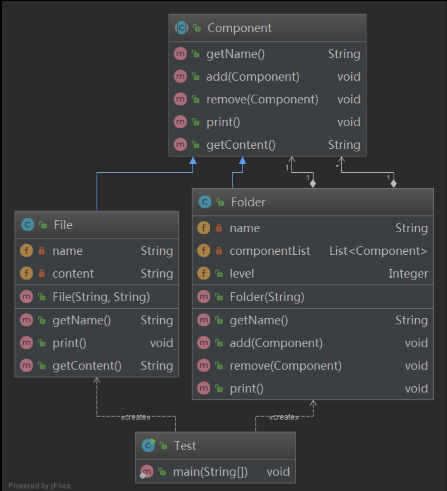
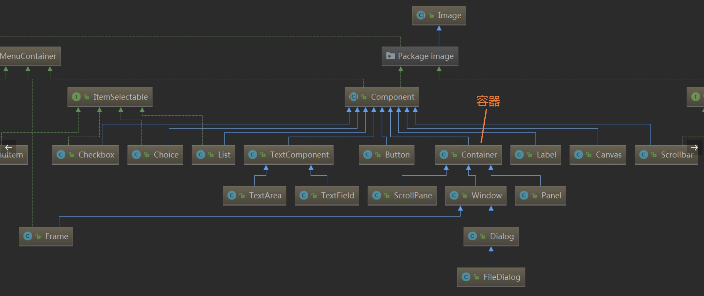
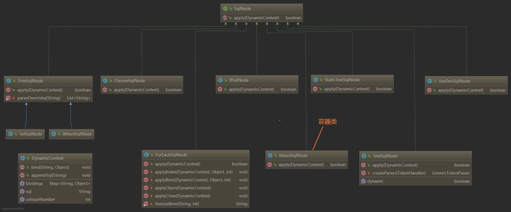

组合模式 树形结构不论在生活中或者是开发中都是一种非常常见的结构，一个容器对象（如文件夹）下可以存放多种不同的叶子对象或者容器对象，容器对象与叶子对象之间属性差别可能非常大。
由于容器对象和叶子对象在功能上的区别，在使用这些对象的代码中必须有区别地对待容器对象和叶子对象，而实际上大多数情况下我们希望一致地处理它们，因为对于这些对象的区别对待将会使得程序非常复杂。
组合模式为解决此类问题而诞生，它可以让叶子对象和容器对象的使用具有一致性。
组合模式(Composite Pattern)：组合多个对象形成树形结构以表示具有 “整体—部分” 关系的层次结构。组合模式对单个对象（即叶子对象）和组合对象（即容器对象）的使用具有一致性，组合模式又可以称为 “整体—部分”(Part-Whole) 模式，它是一种对象结构型模式。
由于在软件开发中存在大量的树形结构，因此组合模式是一种使用频率较高的结构型设计模式，Java SE中的AWT和Swing包的设计就基于组合模式。
除此以外，在XML解析、组织结构树处理、文件系统设计等领域，组合模式都得到了广泛应用。
角色 Component（抽象构件）：它可以是接口或抽象类，为叶子构件和容器构件对象声明接口，在该角色中可以包含所有子类共有行为的声明和实现。在抽象构件中定义了访问及管理它的子构件的方法，如增加子构件、删除子构件、获取子构件等。
Leaf（叶子构件）：它在组合结构中表示叶子节点对象，叶子节点没有子节点，它实现了在抽象构件中定义的行为。对于那些访问及管理子构件的方法，可以通过异常等方式进行处理。
Composite（容器构件）：它在组合结构中表示容器节点对象，容器节点包含子节点，其子节点可以是叶子节点，也可以是容器节点，它提供一个集合用于存储子节点，实现了在抽象构件中定义的行为，包括那些访问及管理子构件的方法，在其业务方法中可以递归调用其子节点的业务方法。
组合模式的关键是定义了一个抽象构件类，它既可以代表叶子，又可以代表容器，而客户端针对该抽象构件类进行编程，无须知道它到底表示的是叶子还是容器，可以对其进行统一处理。同时容器对象与抽象构件类之间还建立一个聚合关联关系，在容器对象中既可以包含叶子，也可以包含容器，以此实现递归组合，形成一个树形结构。
示例 我们来实现一个简单的目录树，有文件夹和文件两种类型，首先需要一个抽象构件类，声明了文件夹类和文件类需要的方法
1 2 3 4 5 6 7 8 9 10 11 12 13 14 15 16 17 18 19 20 21 22 public abstract class Component public String getName () throw new UnsupportedOperationException("不支持获取名称操作" ); } public void add (Component component) throw new UnsupportedOperationException("不支持添加操作" ); } public void remove (Component component) throw new UnsupportedOperationException("不支持删除操作" ); } public void print () throw new UnsupportedOperationException("不支持打印操作" ); } public String getContent () throw new UnsupportedOperationException("不支持获取内容操作" ); } }
实现一个文件夹类 Folder，继承 Component，定义一个 List 类型的componentList属性，用来存储该文件夹下的文件和子文件夹，并实现 getName、add、remove、print等方法
1 2 3 4 5 6 7 8 9 10 11 12 13 14 15 16 17 18 19 20 21 22 23 24 25 26 27 28 29 30 31 public class Folder extends Component private String name; private List<Component> componentList = new ArrayList<Component>(); public Folder (String name) this .name = name; } @Override public String getName () return this .name; } @Override public void add (Component component) this .componentList.add(component); } @Override public void remove (Component component) this .componentList.remove(component); } @Override public void print () System.out.println(this .getName()); for (Component component : this .componentList) { component.print(); } } }
文件类 File，继承Component父类，实现 getName、print、getContent等方法
1 2 3 4 5 6 7 8 9 10 11 12 13 14 15 16 17 18 19 20 21 22 23 24 public class File extends Component private String name; private String content; public File (String name, String content) this .name = name; this .content = content; } @Override public String getName () return this .name; } @Override public void print () System.out.println(this .getName()); } @Override public String getContent () return this .content; } }
我们来测试一下
1 2 3 4 5 6 7 8 9 10 11 12 13 14 15 16 17 18 19 20 21 public class Test public static void main (String[] args) Folder DSFolder = new Folder("设计模式资料" ); File note1 = new File("组合模式笔记.md" , "组合模式组合多个对象形成树形结构以表示具有 \"整体—部分\" 关系的层次结构" ); File note2 = new File("工厂方法模式.md" , "工厂方法模式定义一个用于创建对象的接口，让子类决定将哪一个类实例化。" ); DSFolder.add(note1); DSFolder.add(note2); Folder codeFolder = new Folder("样例代码" ); File readme = new File("README.md" , "# 设计模式示例代码项目" ); Folder srcFolder = new Folder("src" ); File code1 = new File("组合模式示例.java" , "这是组合模式的示例代码" ); srcFolder.add(code1); codeFolder.add(readme); codeFolder.add(srcFolder); DSFolder.add(codeFolder); DSFolder.print(); } }
输出结果
1 2 3 4 5 6 7 设计模式资料 组合模式笔记.md 工厂方法模式.md 样例代码 README.md src 组合模式示例.java
输出正常，不过有个小问题，从输出看不出它们的层级结构，为了体现出它们之间的层级关系，我们需要改造一下 Folder 类，增加一个 level 属性，并修改 print 方法
1 2 3 4 5 6 7 8 9 10 11 12 13 14 15 16 17 18 19 20 21 22 23 24 25 26 27 28 29 30 31 32 33 34 35 36 37 38 39 40 41 42 43 44 public class Folder extends Component private String name; private List<Component> componentList = new ArrayList<Component>(); public Integer level; public Folder (String name) this .name = name; } @Override public String getName () return this .name; } @Override public void add (Component component) this .componentList.add(component); } @Override public void remove (Component component) this .componentList.remove(component); } @Override public void print () System.out.println(this .getName()); if (this .level == null ) { this .level = 1 ; } String prefix = "" ; for (int i = 0 ; i < this .level; i++) { prefix += "\t- " ; } for (Component component : this .componentList) { if (component instanceof Folder){ ((Folder)component).level = this .level + 1 ; } System.out.print(prefix); component.print(); } this .level = null ; } }
现在的输出就有相应的层级结构了
1 2 3 4 5 6 7 设计模式资料 - 组合模式笔记.md - 工厂方法模式.md - 样例代码 - - README.md - - src - - - 组合模式示例.java

在这里父类 Component 是一个抽象构件类，Folder 类是一个容器构件类，File 是一个叶子构件类，Folder 和 File 继承了 Component，Folder 与 Component 又是聚合关系
透明与安全 在使用组合模式时，根据抽象构件类的定义形式，我们可将组合模式分为透明组合模式和安
透明组合模式
透明组合模式中，抽象构件角色中声明了所有用于管理成员对象的方法，譬如在示例中 Component 声明了 add、remove 方法，这样做的好处是确保所有的构件类都有相同的接口。透明组合模式也是组合模式的标准形式。
透明组合模式的缺点是不够安全，因为叶子对象和容器对象在本质上是有区别的，叶子对象不可能有下一个层次的对象，即不可能包含成员对象，因此为其提供 add()、remove() 等方法是没有意义的，这在编译阶段不会出错，但在运行阶段如果调用这些方法可能会出错（如果没有提供相应的错误处理代码）
安全组合模式
在安全组合模式中，在抽象构件角色中没有声明任何用于管理成员对象的方法，而是在容器构件 Composite 类中声明并实现这些方法。
安全组合模式的缺点是不够透明，因为叶子构件和容器构件具有不同的方法，且容器构件中那些用于管理成员对象的方法没有在抽象构件类中定义，因此客户端不能完全针对抽象编程，必须有区别地对待叶子构件和容器构件。
在实际应用中 java.awt 和 swing 中的组合模式即为安全组合模式。
组合模式总结 组合模式的主要优点如下：
组合模式可以清楚地定义分层次的复杂对象，表示对象的全部或部分层次，它让客户端忽略了层次的差异，方便对整个层次结构进行控制。
客户端可以一致地使用一个组合结构或其中单个对象，不必关心处理的是单个对象还是整个组合结构，简化了客户端代码。
在组合模式中增加新的容器构件和叶子构件都很方便，无须对现有类库进行任何修改，符合“开闭原则”。
组合模式为树形结构的面向对象实现提供了一种灵活的解决方案，通过叶子对象和容器对象的递归组合，可以形成复杂的树形结构，但对树形结构的控制却非常简单。
组合模式的主要缺点如下：
使得设计更加复杂，客户端需要花更多时间理清类之间的层次关系。
在增加新构件时很难对容器中的构件类型进行限制。
适用场景：
在具有整体和部分的层次结构中，希望通过一种方式忽略整体与部分的差异，客户端可以一致地对待它们。
在一个使用面向对象语言开发的系统中需要处理一个树形结构。
在一个系统中能够分离出叶子对象和容器对象，而且它们的类型不固定，需要增加一些新的类型。
源码分析组合模式的典型应用 java.awt中的组合模式 Java GUI分两种：
AWT(Abstract Window Toolkit)：抽象窗口工具集，是第一代的Java GUI组件。绘制依赖于底层的操作系统。基本的AWT库处理用户界面元素的方法是把这些元素的创建和行为委托给每个目标平台上（Windows、 Unix、 Macintosh等）的本地GUI工具进行处理。
Swing，不依赖于底层细节，是轻量级的组件。现在多是基于Swing来开发。
我们来看一个AWT的简单示例：
1 2 3 4 5 6 7 8 9 10 11 12 13 14 15 16 17 18 19 20 21 22 23 24 25 26 27 28 29 30 31 32 33 34 35 36 37 38 39 40 41 42 43 44 45 46 47 48 import java.awt.*;import java.awt.event.WindowAdapter;import java.awt.event.WindowEvent;public class MyFrame extends Frame public MyFrame (String title) super (title); } public static void main (String[] args) MyFrame frame = new MyFrame("这是一个 Frame" ); Button button = new Button("按钮 A" ); Label label = new Label("这是一个 AWT Label!" ); TextField textField = new TextField("这是一个 AWT TextField!" ); frame.add(button, BorderLayout.EAST); frame.add(label, BorderLayout.SOUTH); frame.add(textField, BorderLayout.NORTH); Panel panel = new Panel(); panel.setBackground(Color.pink); Label lable1 = new Label("用户名" ); TextField textField1 = new TextField("请输入用户名：" , 20 ); Button button1 = new Button("确定" ); panel.add(lable1); panel.add(textField1); panel.add(button1); frame.add(panel, BorderLayout.CENTER); frame.setSize(500 , 300 ); frame.setBackground(Color.orange); frame.addWindowListener(new WindowAdapter() { @Override public void windowClosing (WindowEvent e) System.exit(0 ); } }); frame.setVisible(true ); } }
我们在Frame容器中添加了三个不同的构件 Button、Label、TextField，还添加了一个 Panel 容器，Panel 容器中又添加了 Button、Label、TextField 三个构件，为什么容器 Frame 和 Panel 可以添加类型不同的构件和容器呢？
我们先来看下AWT Component的类图

GUI组件根据作用可以分为两种：基本组件和容器组件。
基本组件又称构件，诸如按钮、文本框之类的图形界面元素。
1 2 3 4 5 6 7 8 9 10 11 12 13 14 public class Container extends Component private java.util.List<Component> component = new ArrayList<>(); public Component add (Component comp) addImpl(comp, null , -1 ); return comp; } }
容器父类 Container 内部定义了一个集合用于存储 Component 对象，而容器组件 Container 和 基本组件如 Button、Label、TextField 等都是 Component 的子类，所以可以很清楚的看到这里应用了组合模式
Component 类中封装了组件通用的方法和属性，如图形的组件对象、大小、显示位置、前景色和背景色、边界、可见性等，因此许多组件类也就继承了 Component 类的成员方法和成员变量，相应的成员方法包括：
1 2 3 4 5 6 7 8 9 10 11 getComponentAt(int x, int y) getFont() getForeground() getName() getSize() paint(Graphics g) repaint() update() setVisible(boolean b) setSize(Dimension d) setName(String name)
Java集合中的组合模式 HashMap 提供 putAll 的方法，可以将另一个 Map 对象放入自己的存储空间中，如果有相同的 key 值则会覆盖之前的 key 值所对应的 value 值
1 2 3 4 5 6 7 8 9 10 11 12 13 14 15 16 17 public class Test public static void main (String[] args) Map<String, Integer> map1 = new HashMap<String, Integer>(); map1.put("aa" , 1 ); map1.put("bb" , 2 ); map1.put("cc" , 3 ); System.out.println("map1: " + map1); Map<String, Integer> map2 = new LinkedMap(); map2.put("cc" , 4 ); map2.put("dd" , 5 ); System.out.println("map2: " + map2); map1.putAll(map2); System.out.println("map1.putAll(map2): " + map1); } }
输出结果
1 2 3 map1: {aa=1 , bb=2 , cc=3 } map2: {cc=4 , dd=5 } map1.putAll(map2): {aa=1 , bb=2 , cc=4 , dd=5 }
查看 putAll 源码
1 2 3 public void putAll (Map<? extends K, ? extends V> m) putMapEntries(m, true ); }
putAll 接收的参数为父类 Map 类型，所以 HashMap 是一个容器类，Map 的子类为叶子类，当然如果 Map 的其他子类也实现了 putAll 方法，那么它们都既是容器类，又都是叶子类
同理，ArrayList 中的 addAll(Collection<? extends E> c) 方法也是一个组合模式的应用，在此不做探讨
Mybatis SqlNode中的组合模式 MyBatis 的强大特性之一便是它的动态SQL，其通过 if, choose, when, otherwise, trim, where, set, foreach 标签，可组合成非常灵活的SQL语句，从而提高开发人员的效率。
来几个官方示例：
动态SQL – IF
1 2 3 4 5 6 7 8 9 <select id ="findActiveBlogLike" resultType ="Blog" > SELECT * FROM BLOG WHERE state = ‘ACTIVE’ <if test ="title != null" > AND title like #{title} </if > <if test ="author != null and author.name != null" > AND author_name like #{author.name} </if > </select >
动态SQL – choose, when, otherwise
1 2 3 4 5 6 7 8 9 10 11 12 13 14 <select id ="findActiveBlogLike" resultType ="Blog" > SELECT * FROM BLOG WHERE state = ‘ACTIVE’ <choose > <when test ="title != null" > AND title like #{title} </when > <when test ="author != null and author.name != null" > AND author_name like #{author.name} </when > <otherwise > AND featured = 1 </otherwise > </choose > </select >
动态SQL – where
1 2 3 4 5 6 7 8 9 10 11 12 13 14 <select id ="findActiveBlogLike" resultType ="Blog" > SELECT * FROM BLOG <where > <if test ="state != null" > state = #{state} </if > <if test ="title != null" > AND title like #{title} </if > <if test ="author != null and author.name != null" > AND author_name like #{author.name} </if > </where > </select >
动态SQL – foreach
1 2 3 4 5 6 7 <select id ="selectPostIn" resultType ="domain.blog.Post" > SELECT * FROM POST P WHERE ID in <foreach item ="item" index ="index" collection ="list" open ="(" separator ="," close =")" > #{item} </foreach > </select >
Mybatis在处理动态SQL节点时，应用到了组合设计模式，Mybatis会将映射配置文件中定义的动态SQL节点、文本节点等解析成对应的 SqlNode 实现，并形成树形结构。

需要先了解 DynamicContext 类的作用：主要用于记录解析动态SQL语句之后产生的SQL语句片段，可以认为它是一个用于记录动态SQL语句解析结果的容器
抽象构件为 SqlNode 接口，源码如下
1 2 3 public interface SqlNode boolean apply (DynamicContext context) }
apply 是 SQLNode 接口中定义的唯一方法，该方法会根据用户传入的实参，参数解析该SQLNode所记录的动态SQL节点，并调用 DynamicContext.appendSql() 方法将解析后的SQL片段追加到 DynamicContext.sqlBuilder 中保存，当SQL节点下所有的 SqlNode 完成解析后，我们就可以从 DynamicContext 中获取一条动态生产的、完整的SQL语句
然后来看 MixedSqlNode 类的源码
1 2 3 4 5 6 7 8 9 10 11 12 13 14 15 public class MixedSqlNode implements SqlNode private List<SqlNode> contents; public MixedSqlNode (List<SqlNode> contents) this .contents = contents; } @Override public boolean apply (DynamicContext context) for (SqlNode sqlNode : contents) { sqlNode.apply(context); } return true ; } }
MixedSqlNode 维护了一个 List 类型的列表，用于存储 SqlNode 对象，apply 方法通过 for循环 遍历 contents 并调用其中对象的 apply 方法，这里跟我们的示例中的 Folder 类中的 print 方法非常类似，很明显 MixedSqlNode 扮演了容器构件角色
对于其他SqlNode子类的功能，稍微概括如下：
TextSqlNode：表示包含 ${} 占位符的动态SQL节点，其 apply 方法会使用 GenericTokenParser 解析 ${} 占位符，并直接替换成用户给定的实际参数值
IfSqlNode：对应的是动态SQL节点 节点，其 apply 方法首先通过 ExpressionEvaluator.evaluateBoolean() 方法检测其 test 表达式是否为 true，然后根据 test 表达式的结果，决定是否执行其子节点的 apply() 方法
TrimSqlNode ：会根据子节点的解析结果，添加或删除相应的前缀或后缀。
WhereSqlNode 和 SetSqlNode 都继承了 TrimSqlNode
ForeachSqlNode：对应 标签，对集合进行迭代
动态SQL中的 、、 分别解析成 ChooseSqlNode、IfSqlNode、MixedSqlNode
综上，SqlNode 接口有多个实现类，每个实现类对应一个动态SQL节点，其中 SqlNode 扮演抽象构件角色，MixedSqlNode 扮演容器构件角色，其它一般是叶子构件角色